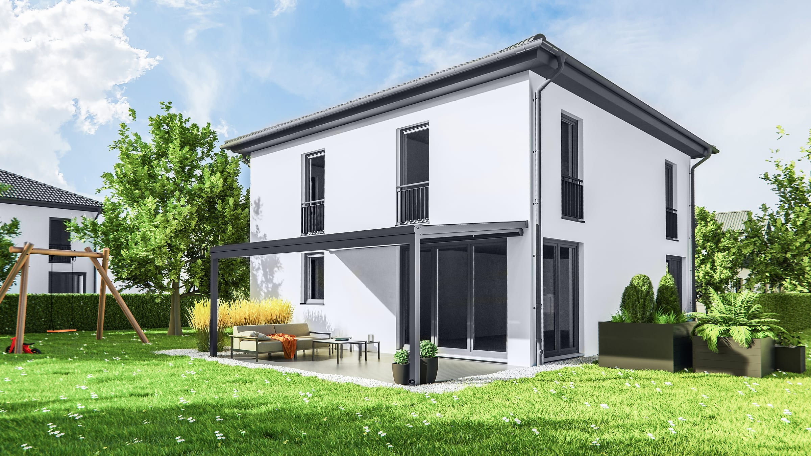
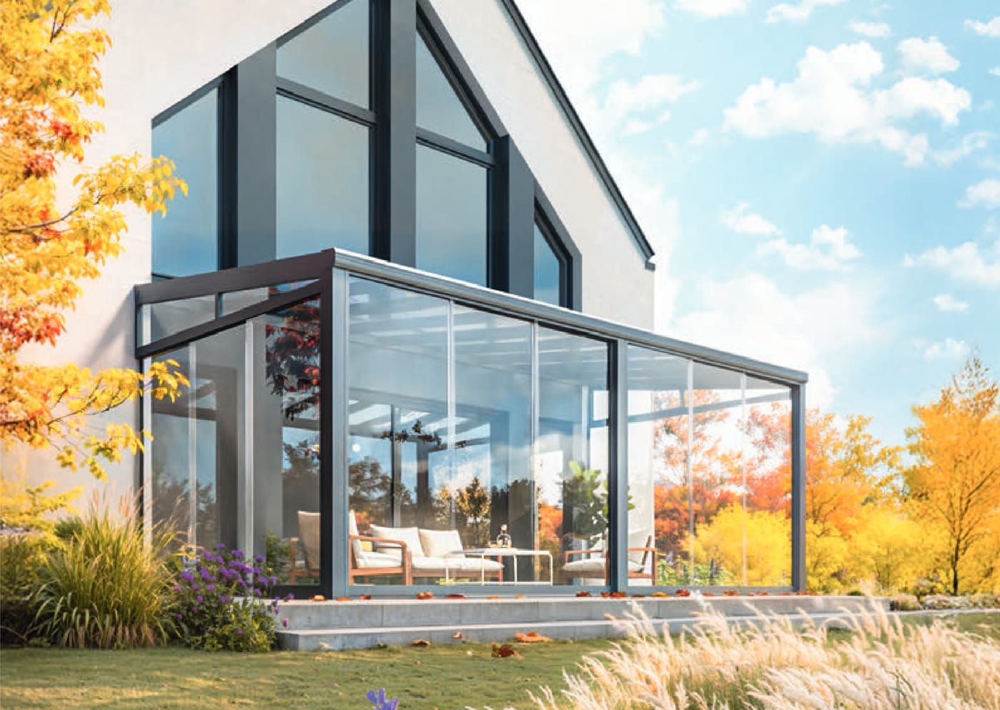
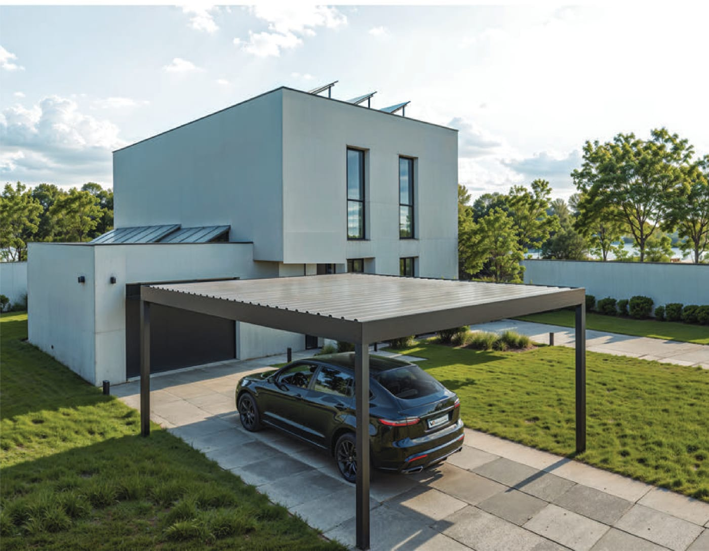

Im Kanton Luzern fragen viele Kundinnen und Kunden nach Kaltwintergärten und Terrassendächern mit Glas-Schiebewänden – der Sitzplatz soll vom Frühling bis in den Herbst nutzbar sein. Wir planen Ihr Dach in 3D und liefern alle Unterlagen für das Baugesuch.

1. Beratung & 3D-Planung: Wir besprechen Ihre Wünsche und zeigen Ihnen das Dach vorab in 3D an Ihrem Haus.
2. Offerte in CHF: Sie erhalten eine klare Offerte ohne deutsche Mehrwertsteuer. Richtpreise: Terrassendach ab CHF 2'500, Flachdach SkyView ab CHF 3'900, Kaltwintergarten ab CHF 5'400 (je 4 × 3 m, Material). Montage CHF 1'600 pro Tag, Lieferung inkl. Verzollung CHF 400 – alles zzgl. 8,1 % Schweizer MWST.
3. Baugesuch: Für Ihre Gemeinde erhalten Sie von uns technische Zeichnungen, Produktdaten und 3D-Ansichten.
4. Lieferung & Montage: Wir erledigen Ausfuhr und Einfuhr und montieren Ihr Dach mit unserem eigenen Team.
Luzern · Sursee · Emmen · Kriens · Sempach · Willisau · Hochdorf · Ebikon · Horw
Vom klassischen Terrassendach bis zum Kaltwintergarten – alles aus einer Hand.


Ja. Nach Sursee und ins Luzerner Mittelland sind es gut eine Stunde, in die Stadt Luzern rund eineinhalb Stunden. Beratung und Aufmass bündeln wir in festen Terminen. Beratung und Aufmass vor Ort sind für Sie kostenlos und unverbindlich.
In der Regel ja – Terrassendächer, Wintergärten und Carports sind in der Schweiz meist bewilligungspflichtig. Ob das ordentliche oder ein vereinfachtes Verfahren gilt, entscheidet Ihre Gemeinde. Wir liefern Ihnen technische Zeichnungen, Produktdaten und 3D-Ansichten für Ihr Baugesuch.
Sie erhalten eine Offerte in CHF ohne deutsche Mehrwertsteuer. Um Ausfuhr, Verzollung und Einfuhr kümmern wir uns. Bei der Einfuhr fällt die Schweizer MWST von 8,1 % an; Industriezölle gibt es seit 2024 keine mehr.
Rund um den Sempachersee und im Luzerner Hinterland ist die Schneelast höher als im Basler Raum. Die Profile und Sparrenabstände legen wir deshalb besonders sorgfältig aus.
Kostenlose Beratung und Aufmass vor Ort – wir melden uns innerhalb von 24 Stunden.